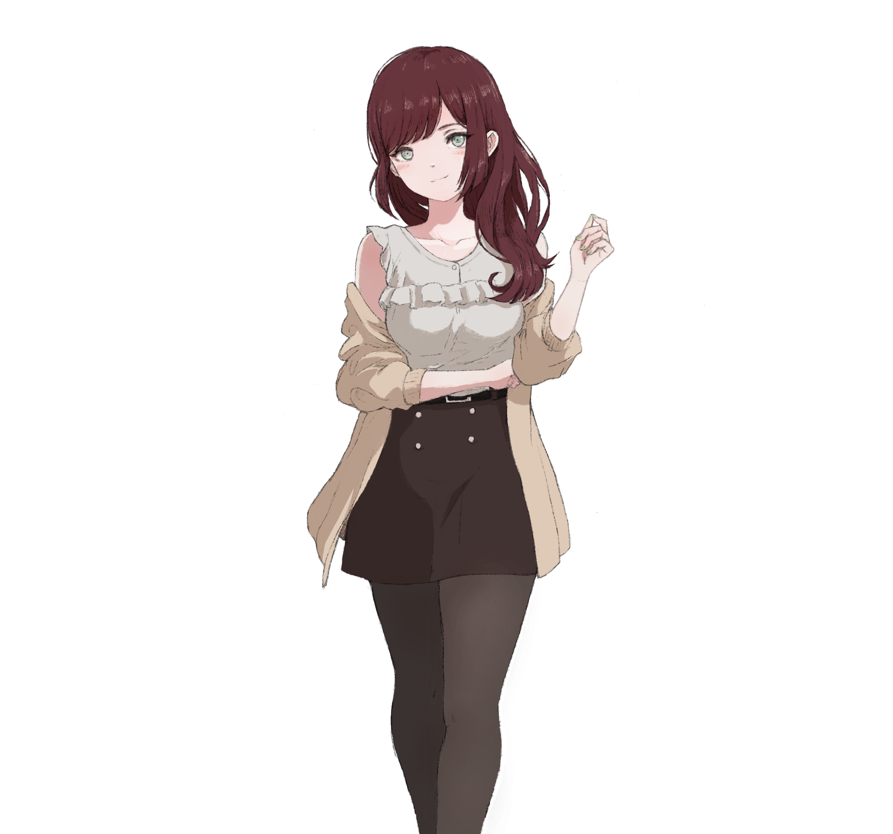

夏野
主角
远离曾经的家乡，流浪的女高中生
她独自旅行了很长时间，经历了许多，见证了许多
在偶然的机遇后，通过某种方式与你产生了交集
很明显，她并不能真正适应独自思考判断处理眼前的一切
你帮助她前进，见证她成长，并试图揭开大病变的原因————

茜
重要人物
追寻真理的研究员
她与夏野在一次废墟探索行动中偶然与夏野相遇
并通过夏野成为了知晓你存在的第二人
在意外感染后，茜瞒着所有人离开营地，出发寻找[真相]
三日
重要人物
被连接者
三日主动地找上了夏野
她似乎与你的电脑单向连接着，强烈的好奇促使了她寻找夏野
在与你，夏野，茜交流后，她对[真相]似乎有了一些自己的见解
巡
神出鬼没的画家
“哟，这里是巡哦”她这么对夏野喊道
与夏野一样，巡也是漫无目的地旅行，仅仅是旅行并沿途画画
巡似乎不喜欢与人同行，但她乐意与人分享她的画作
希子
插曲人物
出逃的女孩
在废弃的村庄与夏野相识
偷偷溜出营地，只为寻找自己的爱犬
连营地的位置都未能记住的她又会发生什么呢
篠原
插曲人物
照片之景的追寻者
从小村落而来
在病变发生后，无所事事的篠原开始寻找起捡到的照片上的景色
经历这一切后，她却迫切想回到那个她曾舍弃的故乡
美奈
插曲人物
剑道少女
曾经外表光鲜的她在末世时却感到如释重负
此刻的她只想放弃所有包袱，踏上追寻前辈的旅程
回到剑道馆，再次奋力挥起手中的竹刀
五河
插曲人物
风景的追猎人
她自城市而来，出身书香门第
却向往自然，病变发生之后一直试图走遍自然的每一个角落
比起回首封于高楼的过往，五河更喜欢享受现在的逐风生活